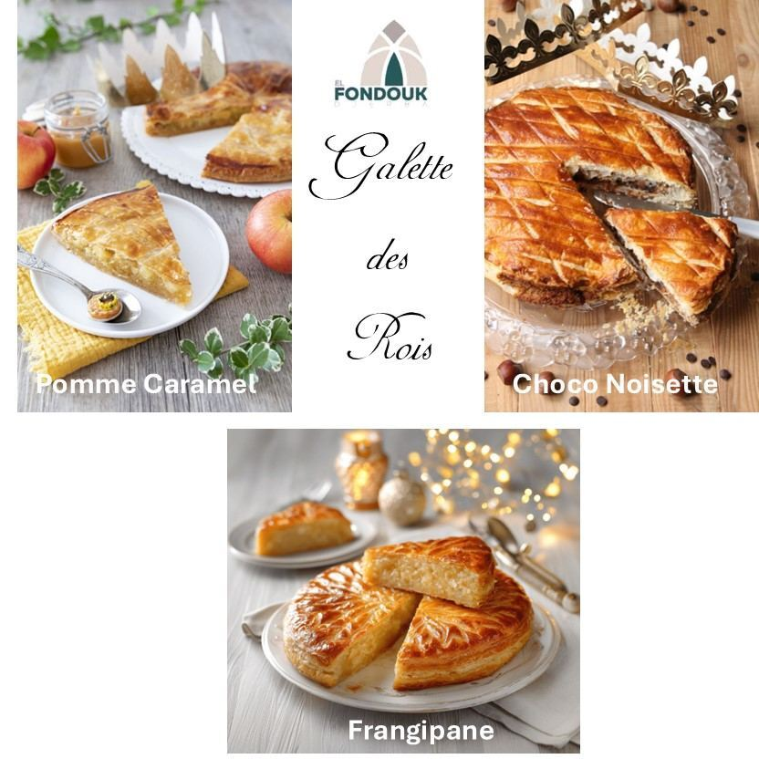
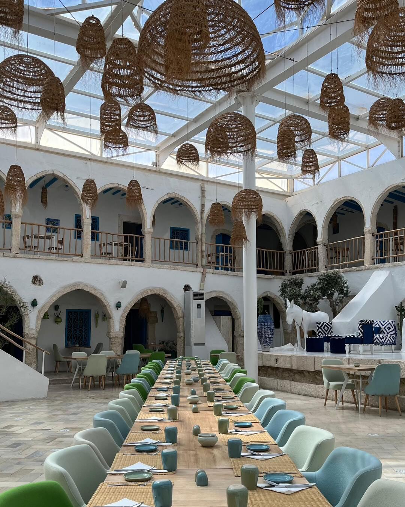
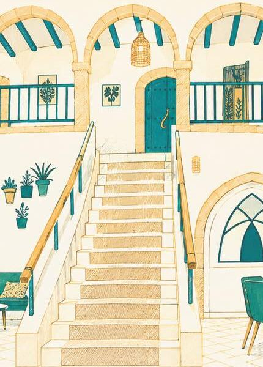
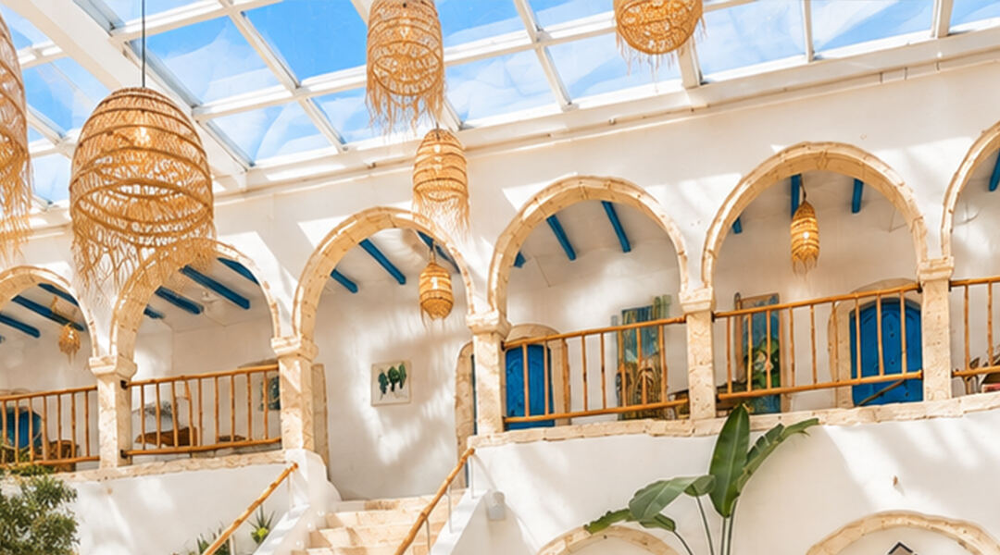
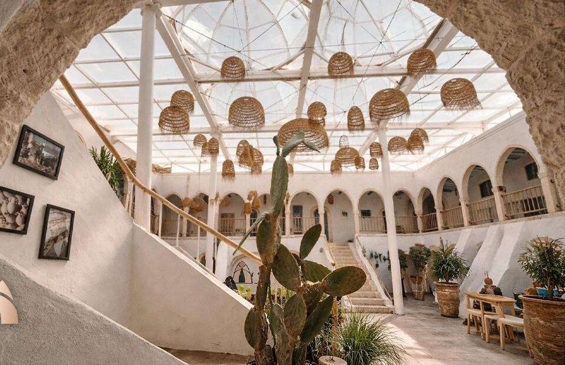
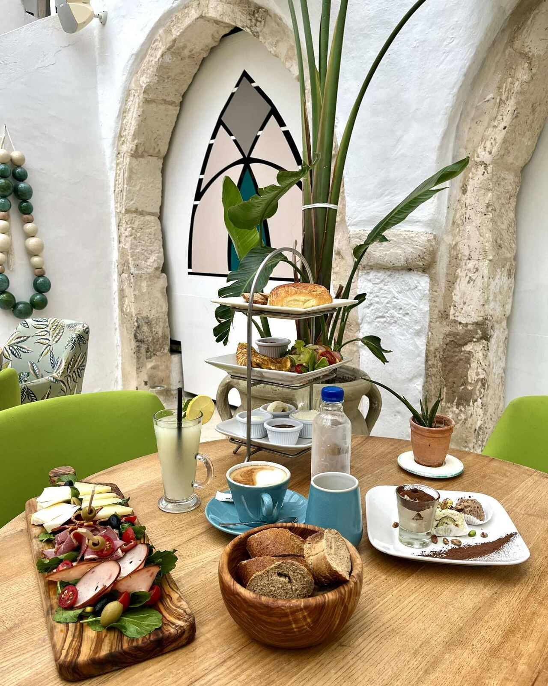
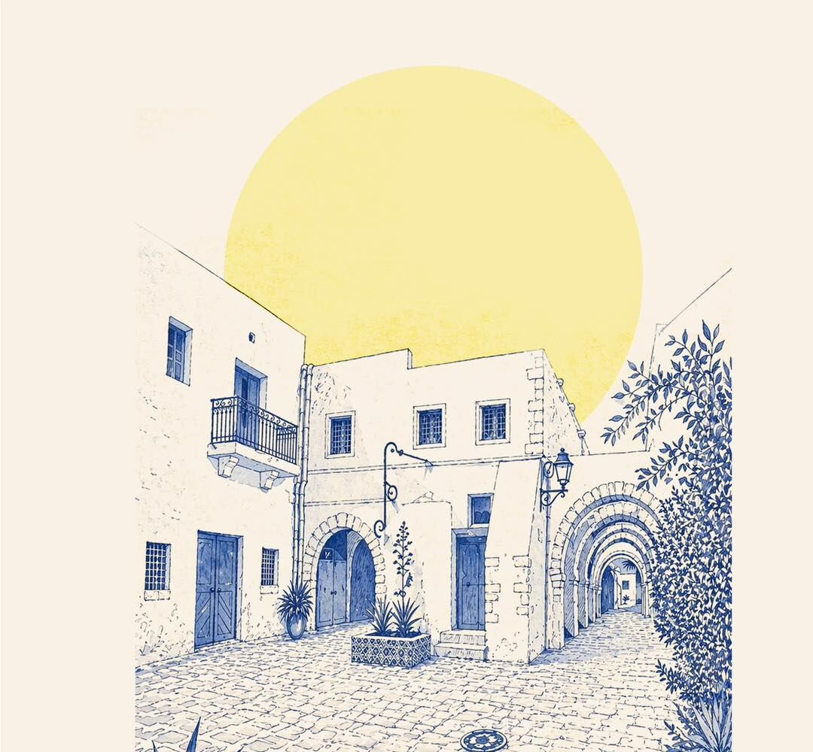

Janvier
Galettes des rois
Frangipane, pommes caramélisées, noisette & pépites de chocolat. Avec fève en porcelaine et couronne.
Houmt Souk · Djerba
Un patio à arcades, des suspensions tressées, une grande tablée… Au cœur du Fondouk Jomni, on vient pour le petit déjeuner, on reste pour le déjeuner, on revient pour le dîner.
Fondouk Jomni, rue Moncef Bey, Houmt Souk, Djerba

Le patioDJERBA
Le lieu
Des arcades blanches, des balustrades en bois, des portes bleues, et la lumière qui tombe de la verrière.



Restaurant
Prix en dinars tunisiens, tels que publiés sur la dernière carte. La carte change avec les saisons.

Tous les matins
En formule ou à la carte, sous la verrière.
De 9h00 à 11h30
Au fil de l’année
Une carte d’hiver, une carte d’été, et des moments que la maison prépare chaque année. Les dates sont annoncées sur Instagram.

Frangipane, pommes caramélisées, noisette & pépites de chocolat. Avec fève en porcelaine et couronne.
Menu de rupture du jeûne, puis snacking, pâtisserie et boissons jusque tard. Et la soirée El Nos, à la mi-Ramadan.
رمضان كريمUn menu à thème pour l’occasion. En 2026 : « Le Taj Mahal, le palais de l’amour », un voyage dans les épices de l’Inde.
Le 6 juin 2026, El Fondouk a fêté ses 6 ans. Et la pâtisserie propose aussi un service traiteur sur mesure.
Concept store
Parfums, parfums d’intérieur, soins pour le corps et le visage, et la collection Amarante Studio Cuir (sacs, sandales, petite maroquinerie). Un petit cocon au 10, place de l’Église, à Houmt Souk.
Infos pratiques
